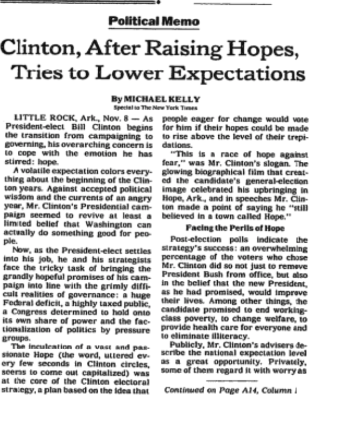

Intimacy
A Teacher Ending A Dry Spell
She ended the streak but deserved so much more.
Read article
Data & news stories from the edge of attention. When boredom meets curiosity, the questions get interesting.
She ended the streak but deserved so much more.
How people really use ChatGPT.
If Smith were alive now... he’d have to write a new book.
This got spicy real fast...
It's not "us" vs "them". It's "us" vs Big Pharma.
New MRI research points to non-opioid pain relief.
Auto stress is climbing fast.

Everyone's talking about the loneliness epidemic. Nobody's connecting the dots.
When measles spikes + tradwife spikes = signal.
We're all fucked up. But joy still works.